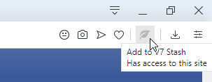
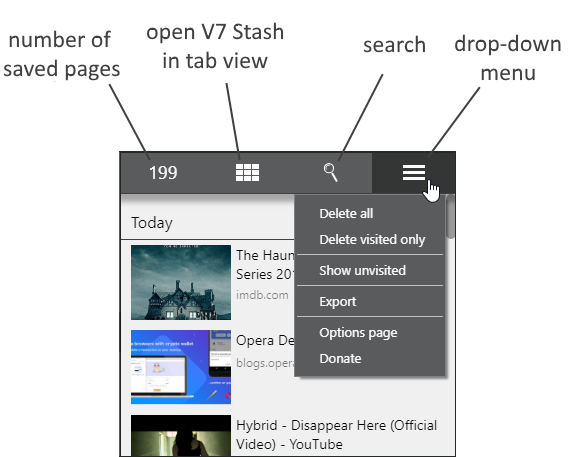
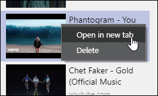

basically, if you have some extension that is dealing with downloads, all other extensions will have bugged file name
2.2 - 1542628800000
added list view -.-
you can switch between list view and thumbnails view on drop-down menu
2.1 - 1542024000000
fix for previous update
If you are updating from 1.6.5, extension will auto-export old data
2.0 - 1541764800000
New update... big one
This is a new and better version of V7 Stash
Many things are fundamentally changed, including how extension deals with images
Your old stashed pages are still here but images won't be available, I'm sorry for that
The best way to restore your images is to visit stashed page and re-save it with click in address bar...
... or simply drag any image on that stashed page in sidebar and extension will replace it
check How to... section for other info
1.7 // 26-10-2016
small fix
1.6.5 // 05-08-2016
added Dutch translation
when opening stash tab, speed dial page will be used, if existing
1.6 // 11-04-2016
new options page design
added donations page (on left menu)
1.5 // 22-02-2016
added tab view, similar to speed dial in which you can see your stashed pages as thumbnails
new icons for tab feature, in V7 Stash sidebar panel on top menu, and in Opera toolbar next to address bar
changed some logic in image creation, it could take longer to see new preview, but it's safer this way
added keyboard shortcuts (suggestions) for opening sidebar (Alt+S), tab view (Alt-T) and export V7 Stash (Alt+S). You can customize them on Opera internal shortcuts page
added close button on sidebar (far right on top menu)
1.2 // 21-09-2015
added German translation
1.1 // 27-08-2015
fixed stash preview after drop on bookmarks or notes icon
1.0 // 11-08-2015
added Russian and Portuguese(BR) language
fixed transparent hero images (black background)
some code cleanup
0.9.9 // 05-08-2015
fixed zooming (from bottom bar)
forced open graph images for hero (if defined)
import will accept only .json files (and show them in open file dialog)
fixed date on tooltip info (it was one month off, previously saved pages will keep that bugged date)
0.9.85 // 10-07-2015
small fix
0.9.8 // 09-07-2015
first upload
The most convenient way to save page is to simply click on the leaf icon in address bar.
Things changed, so extensions can't use address bar icons anymore.
The most convenient way to save page is to simply click on the leaf icon on toolbar.

Click on the gray icon will add page to V7 Stash, while click on the green icon will remove it.
Another way to add or remove single pages from V7 stash is trough right click context menu anywhere on the page.
You need to enable it in Options page first.
Sidebar doesn't need to be opened to add/remove pages from V7 Stash
V7 Stash is primarily made to be used within Opera sidebar, but there is also tab view with bigger thumbnails in a grid, similar to speed dial. You can open tab view by clicking on second button in sidebar

Extension will try to find best image for stashed item.
If you don't like chosen image, you can replace it with another image.
Simply drag new image (from page) and drop it in sidebar on desired stash item
Right click stashed item (in sidebar and in tab view) for context menu

Drag-out feature.
One of the fastest and easiest ways to open stashed page in new tab is to simply drag it out of the sidebar and drop it somewhere on the right. Drag-out example gif
Trash will keep your deleted items during single browser session.
Once you close browser, it's not possible to restore them anymore.
To restore items, select them and click Restore selected button on top
Left click select single item
Ctrl + Left click add or remove item from selection
(Cmd + Left click on Mac)
Shift + Left click select range, first and last
Stats shows how many pages you stashed by age.
You can delete stashed pages by clicking on trash icon when hovering any age row. eg. Delete older than 60 days
When importing, current pages will stay in stash. Extension will delete duplicates (by url) and keep newest.
If you don't like that, simply delete all before importing.
When in search mode, click on blue top bar surrounding input field to return to normal view or press ESC key while search field is in focus.
Keyboard shortcut for opening sidebar is ALT+1, and for tab view is ALT+2
You can change that shortcut in browser Configure shortcuts page
As of October 2019. Opera is merging extensions sidebar with sidebar (web UI) in developer version, and shortcuts for sidebar extensions are broken, for now. Shortcut for sidebar won't work if extension bar is hidden Extensions bar is vertical toolbar on the left, activated with Ctrl + Shift + S, not the dark WEB-UI sidebar with messengers, etc.... or whatever Opera is calling that...thing